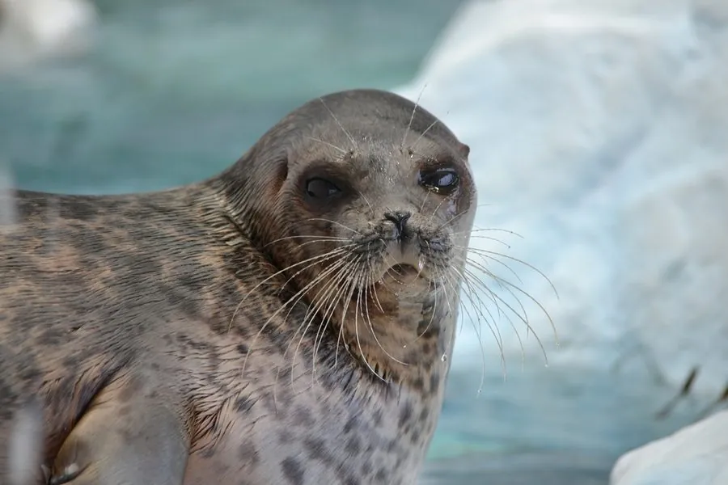

哺乳动物 · 动物界
环斑海豹 Pusa hispida

环北极分布的小型海豹，皮毛上有深色环状斑纹，幼崽出生时是白色绒毛，高度依赖海冰繁殖和休息。
- 分类
- 门脊索动物门纲哺乳纲目食肉目科海豹科属环斑海豹属
- 栖息环境
- 北冰洋及邻近海域的浮冰区、海岸和峡湾
- 地理分布
- 环北极海域，包括加拿大、格陵兰、北欧和俄罗斯沿岸
- 保护级别
- IUCN 无危（LC）；非中国分布物种
物种志
环斑海豹体长 1.1–1.6 米，体重 50–110 kg，雌性略大。它的身体圆胖，头部较小，毛色为灰褐色，背部和体侧布满深色环状斑纹，因此得名；幼崽出生时覆盖白色绒毛，藏在雪洞中躲避天敌。
环斑海豹呈环北极分布，生活在北冰洋及邻近海域，包括加拿大、格陵兰、北欧和俄罗斯沿岸，是北极熊的主要猎物之一。它以鱼类、甲壳类和头足类为食，能在冰下长时间潜水。繁殖期雌兽在浮冰上挖掘雪洞产仔，每胎 1 仔，哺乳期约 1 个月。环斑海豹是北极海冰生态系统的重要物种，目前被列为无危，但气候变暖导致海冰减少，正威胁其繁殖和休息场所。
形态与习性
- 食性鱼类、甲壳类与头足类
- 体长1.1–1.6 m
- 体重50–110 kg
- 寿命约 25–30 年
- 繁殖每胎 1 仔，哺乳约 1 个月
- 特征深色环状斑纹，幼崽为白色绒毛
趣味知识
- 环斑海豹的幼崽出生时是白色绒毛，藏在雪洞中。
- 环斑海豹是北极熊最主要的猎物之一。
- 环斑海豹依赖海冰繁殖和休息，海冰减少威胁其生存。